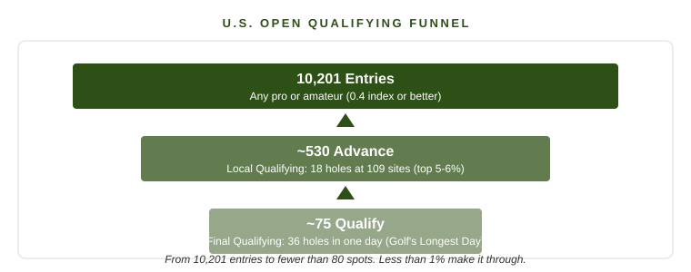
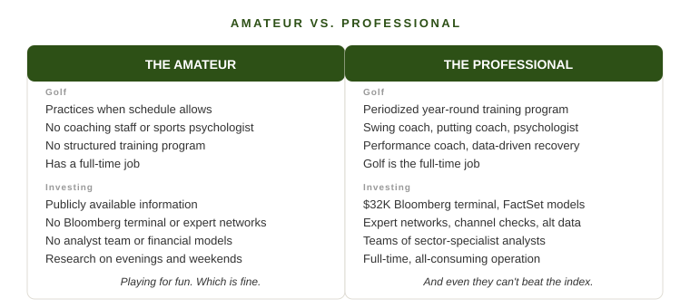

A few times a year, I play in club events at my course. I'm a bogey golfer. I enjoy the game, I play regularly, and on a good day I can put together a stretch of holes that makes me feel like I know what I'm doing. Then the event starts and I'm paired with the guys who carry a +1 or better handicap index.
It's humbling in a way that's hard to describe unless you've experienced it. These players hit shots I didn't know were possible outside of television. They shape the ball both directions on command. They hit 4-irons to tucked pins and leave themselves tap-in birdies. Their short game looks effortless. And standing a tee box or two behind me, playing the same course from further back, I find myself thinking the same thing every time: this guy should be a professional.
He shouldn't. And the reason why tells you something important about investing.
The Most Democratic Event in Sports
The U.S. Open is the only major championship in golf that is truly open to the public. Any professional or amateur with a handicap index of 0.4 or lower can enter. The 2026 U.S. Open at Shinnecock Hills received 10,201 entries. The qualification process works like a funnel: two rounds of qualifying, each more brutal than the last, until fewer than 80 survivors join the world's top-ranked players in the 156-player field. Less than 1% make it through.

Here's the part that matters: those qualifiers almost never win. At the 2025 U.S. Open at Oakmont, only 21% of qualifiers made the cut. In the tournament's entire history, only eight champions have come through qualifying, and the last one, Lucas Glover in 2009, was a PGA Tour pro having an off year who had narrowly missed the world ranking cutoff for exemption. The club pros and amateurs who survive the qualifying gauntlet make for great stories. Michael Block's 2023 PGA Championship hole-in-one while playing alongside Rory McIlroy was treated like a modern miracle. His finish was still 15 shots behind the winner.
What a Professional Actually Looks Like
Speaking of McIlroy, consider what his operation looks like. This is what it means to be a professional golfer at the highest level.
McIlroy's alarm goes off between 5:30 and 6:00 a.m. His first priority is a 45-minute strength session in his home gym. He trains 3-4 times per week, with his year organized into periodized blocks cycling through strength, active recovery, power, and conditioning phases. He wears a WHOOP fitness tracker and his performance coach, Ro Sharma, uses regular testing of grip strength, explosive jump metrics, and recovery data to fine-tune the program. His resting heart rate sits around 47-49 beats per minute. After every round, his cool-down is ritualized: a stationary bike, compression boots, and soft tissue work.
His nutrition is engineered. He targets 180 grams of protein per day, eats protein first at every meal because his body handles carbs better that way, avoids gluten because it dulls his energy, and cuts off caffeine after 2 p.m. to protect his sleep. He takes magnesium and theanine before bed and keeps his bedroom cool and dark.
His team includes Michael Bannon, his swing coach since childhood. Brad Faxon, a former PGA Tour player, coaches his putting. Dr. Bob Rotella, one of the most respected sports psychologists alive, handles his mental game. Harry Diamond, his best friend since they were kids in Northern Ireland, carries his bag. McIlroy arrives at the course three and a half hours before his tee time. His pre-round routine is as structured as his training.
This is what it takes to compete at the top of professional golf. Not just talent. A full-time, multi-disciplinary operation built around one objective: peak performance on Thursday through Sunday.
The Gap You Can't See from the Gallery
Now think about the best golfer at your club. The +1 index who makes you wonder why he's not out on tour. He's talented. He might even be more naturally gifted than some players who hold PGA Tour cards. But he probably has a job. He practices when he can, not on a structured periodized program designed by a performance coach. He doesn't have a sports psychologist helping him reframe pressure as privilege. He doesn't have a putting coach, a swing coach, and a caddie who's been reading greens with him for a decade. He doesn't have anyone dialing in his protein timing or managing his recovery protocols.
The gap between a great amateur and a professional isn't just skill. It's infrastructure. It's the accumulation of marginal advantages across every dimension of the game, compounded over years of full-time focus. That +1 at your club is playing a different sport than Rory McIlroy, even though they're both hitting the same white ball into the same size hole.

The Same Dynamic Exists in Investing
In my work at the multi-family office, I sit across the table from professional investors regularly. Hedge fund managers, private equity partners, long-only equity specialists. And the parallels to professional golf are striking.
These investors have Bloomberg terminals that cost $32,000 a year, providing real-time data, financial models, and a communication network connecting them to every major institution on the planet. They use FactSet for deep financial modeling. They subscribe to expert networks where they pay for one-on-one calls with former executives, supply chain managers, and industry specialists to pressure-test investment theses. Two-thirds of hedge funds with over $1.5 billion in assets conduct channel checks, gathering intelligence directly from distributors, retailers, and suppliers to gauge real-time demand before earnings are reported.
They have teams of analysts who each cover a narrow slice of the market with deep expertise, sifting through roughly 20 ideas a week to find one worth pitching. They build detailed discounted cash flow models projecting a company's earnings five to ten years into the future. They attend management meetings, non-deal roadshows, and industry conferences. They track satellite imagery of parking lots and shipping routes, analyze aggregated credit card data to predict consumer spending, and scrape websites for pricing and hiring signals. Hedge funds are projected to spend $15.4 billion on alternative data in 2025 alone.
Their daily routine is structured around one goal: finding something the market has mispriced. It's a full-time, all-consuming operation, just like McIlroy's.
Now think about the individual investor picking stocks at home. He's smart. He reads the Wall Street Journal. He might even have a finance background. But he has a day job. He doesn't have a Bloomberg terminal, expert network access, or a team of analysts. He's making decisions with publicly available information that the market has already priced in by the time he reads it. The structural disadvantage is enormous, just like the club golfer standing on the first tee at the U.S. Open.
But Here's Where the Analogy Breaks
In golf, the professionals win. Rory McIlroy, Scottie Scheffler, and the rest of the top 50 take the trophies home. The system works as you'd expect: more resources and more talent produce better outcomes.
In investing, something strange happens. The professionals, on average, don't win. S&P Global publishes a scorecard called SPIVA that tracks this. Over the 15-year period ending December 2024, more than 90% of actively managed U.S. large-cap funds trailed the S&P 500. Not a single equity fund category had a majority of active managers outperforming their benchmark. Zero out of 22 categories. And the longer the time horizon, the worse it gets.
The resources, the expert networks, the satellite data, the $32,000 terminals. All of that infrastructure, and nine out of ten professional investors still can't beat a passive index fund that charges almost nothing and requires no expertise to own.
This is the most important thing an individual investor can understand. The game of public market stock picking is so competitive, so efficient, and so saturated with intelligent, well-resourced professionals that even they can't reliably extract an edge. The market, in aggregate, is smarter than almost any individual participant, no matter how well-equipped.
If the professionals with every conceivable advantage can't consistently beat the index, the individual investor picking stocks on Schwab has essentially no chance of doing it over the long run. Not because they're not smart. Because the game is that hard.
Play It Like a Hobby
None of this means you shouldn't pick stocks. It means you should be honest about what you're doing when you do.
Think about it the way I think about my golf game. I love playing. I enjoy the process of trying to get better. I like studying the game, talking about it with friends, and competing in club events even though I know I'm not going to win. Golf enriches my life. But I don't confuse my Saturday round with what Rory McIlroy does for a living. I don't bet my financial future on my ability to break 80.
Stock picking can work the same way. If you enjoy researching companies, following markets, and having an opinion on where things are headed, that's a legitimate hobby. It's intellectually stimulating. It gives you something interesting to talk about at dinner. It teaches you about how businesses work, how economies function, and how to think about risk and reward. Those are genuinely valuable skills, even if they don't translate into market-beating returns.
My recommendation: allocate about 5% of your portfolio to individual stocks if you enjoy it. Treat it as your fun money. Learn from it. Talk about it. Enjoy it. But let a passive index fund do the heavy lifting for the other 95%. That's not a concession. It's the same logic that tells a bogey golfer to enjoy his weekend round without quitting his day job to enter U.S. Open qualifying.
The best investors I know, the real professionals, would tell you the same thing. The game is hard enough even when it's all you do. If it's not all you do, invest for your own race and find your edge somewhere else.